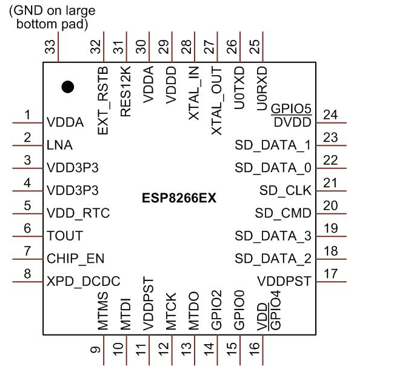
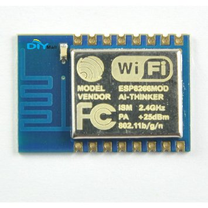
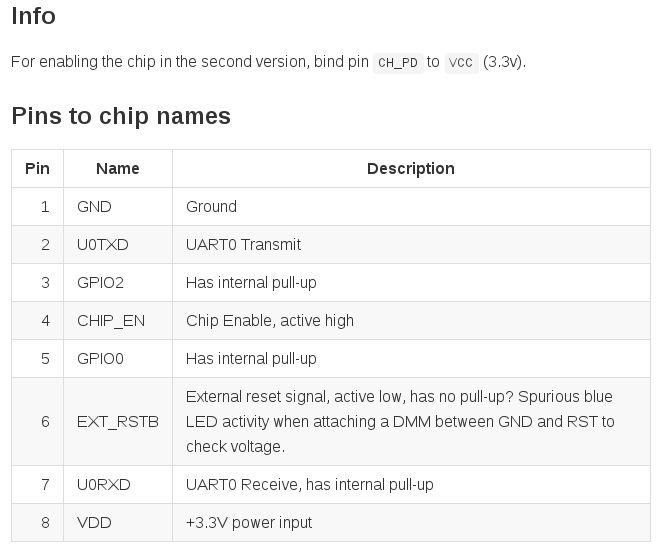
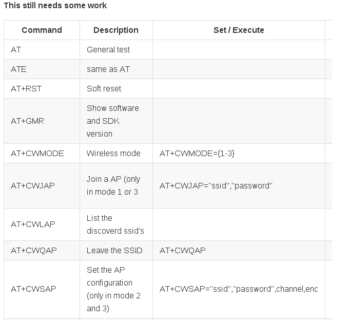
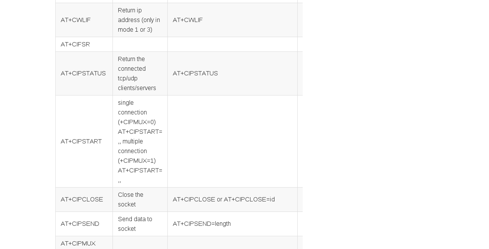
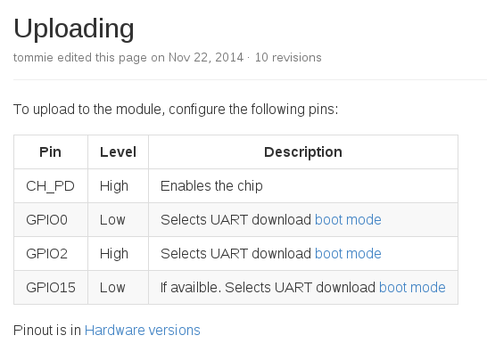
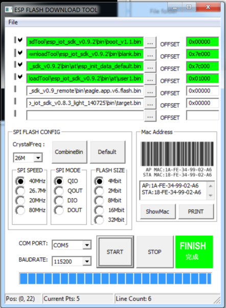
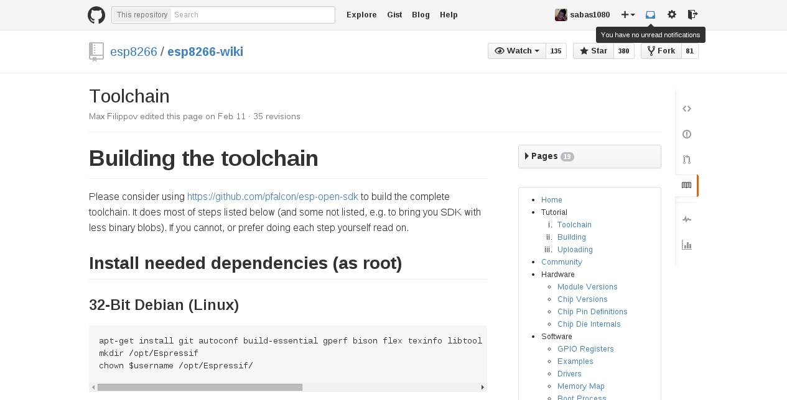
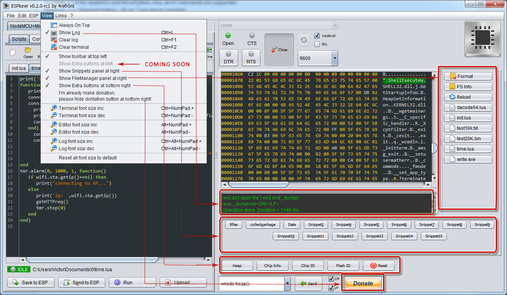
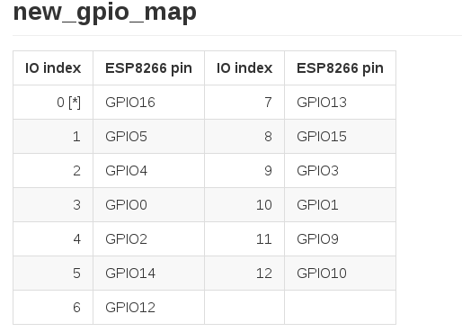

ESP8266
El Internet de las Cosas a bajo Costo
Created by Andres Sabas / @sabasacustico
y gatos ingenieros
ESP8266
Modulo Tranceptor Wifi Serie SoC.
Caracteristicas Principales
- It's a wireless SoC
-It has GPIO, I2C, ADC, SPI, PWM and some more
-It's running at 80MHz
-64KBytes of instruction RAM
-96KBytes of data RAM
-64KBytes boot ROM
-It's a RISC architecture
-The ESP8266 chip is made by Espressif
Caracteristicas Principales
-802.11 b/g/n protocol
-Wi-Fi 2.4 GHz, support WPA/WPA2
-Super small module size (11.5mm x 11.5mm)
-Integrated 10-bit ADC
-Integrated TCP/IP protocol stack (ipv4 only at the moment)
- +20dBm output power in 802.11b mode
-Deep sleep power
-Integrated low power 32-bit MCU
- SDIO 2.0, SPI, UART, I2C
Modelos
Diferentes modelos.
ESP-01 Version 2.

ESP-03
Mas GPIO Disponibles.

ESP-12
Con Certificacion FCC.

Pinout
¿Como se conecta?
Comandos AT
Comandos predefinidos con los que podemos controlar el modulo via serial.
Comandos AT
Firmware
AT: Comandos predefinidos con los que podemos controlar el modulo via serial.
Compilado: SDK
Perzonalizado: LUA, Frankensteinn y otros
Hardware
ESP8266.
Convertidor USB-Serial FTDI
Arduino
Fuente de 3.3v
Subir firmware
Herramientas en Windows
Herramientas en Linux y Mac
./esptool.py --port /dev/ttyUSB0 write_flash 0x00000 eagle.app.v6.flash.bin 0x40000 eagle.app.v6.irom0text.bin
Arduino Codigo
/*
*Andres Sabas
*Sketch para comprobar funcionamiento del ESP8266
*Firmware: 0.9.2
*Fecha: 14 de Marzo del 2015
*/
#include
#define SSID "XXXXXXXXXXX"
#define PASS "XXXXXX"
#define DST_IP "220.181.111.85"
SoftwareSerial dbgSerial(10, 11); // RX, TX
void setup()
{
// Open serial communications and wait for port to open:
Serial.begin(9600);
//Serial.setTimeout(5000);
dbgSerial.begin(9600); //can't be faster than 19200 for softserial
dbgSerial.println("ESP8266 Demo");
//test if the module is ready
Serial.println("AT+RST");
delay(1000);
if(Serial.find("OK"))
{
dbgSerial.println("Module is ready");
}
else
{
dbgSerial.println("Module have no response.");
while(1);
}
delay(1000);
//connect to the wifi
boolean connected=false;
for(int i=0;i<5;i++)
{
if(connectWiFi())
{
connected = true;
break;
}
}
if (!connected){while(1);}
delay(5000);
//print the ip addr
/*Serial.println("AT+CIFSR");
dbgSerial.println("ip address:");
while (Serial.available())
dbgSerial.write(Serial.read());*/
//set the single connection mode
Serial.println("AT+CIPMUX=0");
}
void loop()
{
String cmd = "AT+CIPSTART=\"TCP\",\"";
cmd += DST_IP;
cmd += "\",80";
Serial.println(cmd);
dbgSerial.println(cmd);
if(Serial.find("Error")) return;
cmd = "GET / HTTP/1.0\r\n\r\n";
Serial.print("AT+CIPSEND=");
Serial.println(cmd.length());
if(Serial.find(">"))
{
dbgSerial.print(">");
}else
{
Serial.println("AT+CIPCLOSE");
dbgSerial.println("connect timeout");
delay(1000);
return;
}
Serial.print(cmd);
delay(2000);
//Serial.find("+IPD");
while (Serial.available())
{
char c = Serial.read();
dbgSerial.write(c);
if(c=='\r') dbgSerial.print('\n');
}
dbgSerial.println("====");
delay(1000);
}
boolean connectWiFi()
{
Serial.println("AT+CWMODE=1");
String cmd="AT+CWJAP=\"";
cmd+=SSID;
cmd+="\",\"";
cmd+=PASS;
cmd+="\"";
dbgSerial.println(cmd);
Serial.println(cmd);
delay(5000);
if(Serial.find("OK"))
{
dbgSerial.println("OK, Connected to WiFi.");
return true;
}else
{
dbgSerial.println("Can not connect to the WiFi.");
return false;
}
}
Codigo en github Sabas1080.
Compilar tu propio Firmware
Toolchain ESP8266 Wiki.
LUA


ESPlorer
GPI0 Map
Codigo ejemplo LUA
-- Use the code as needed. Bits and pieces snarfed
-- from various online sources.
-- Find an open AP and turn on GPIO 2
-- To see debug or any output to the com port set debug
-- equal to 1. Otherwise leave set to 0.
debug=0
gpio.mode(3,gpio.OUTPUT)
gpio.mode(4,gpio.OUTPUT)
gpio.write(3,gpio.LOW)
gpio.write(4,gpio.LOW)
function network_open()
gpio.write(pin,gpio.HIGH)
tmr.delay(1000)
--gpio.write(pin,gpio.LOW)
tmr.delay(1000)
gpio.write(pin,gpio.HIGH)
tmr.delay(1000)
--gpio.write(pin,gpio.LOW)
tmr.delay(1000)
gpio.write(pin,gpio.HIGH)
tmr.delay(1000)
--gpio.write(pin,gpio.LOW)
tmr.delay(1000)
if debug==1 then print("gpio 0 on") end
end
function network_close()
--gpio.write(pin,gpio.HIGH)
--tmr.delay(1000)
gpio.write(pin,gpio.LOW)
--tmr.delay(1000)
if debug==1 then print("gpio 2 on") end
end
function network_not()
pin=4
gpio.mode(pin,gpio.OUTPUT)
gpio.write(pin,gpio.LOW)
if debug==1 then print("gpio 0 off") end
end
function checkap()
-- no ap found
ap=0
function listap(t)
for k,v in pairs(t) do
--print(k.." : "..v)
--print(v)
a=string.sub (v, 0 , 1 )
print(a)
if debug==1 then print(a) end
if a=="0" or a=="1" then
print("Found open node" , k)
-- found at least one open Ap..
network_open()
else
print ("No open nodes found")
network_close()
end
end
end
wifi.sta.getap(listap)
end
-- send data every X ms to thing speak
tmr.alarm(0, 10000, 1, function() checkap() end )
DEMO
Bibliografia